PLC concepts, sensors, actuators, motor/control systems, uptime, and root-cause troubleshooting.
Controls Engineering • Automation • Electrical Troubleshooting
Controls-focused engineer for automation, machines, signals, and uptime.
Electrical & Computer Engineering graduate moving into a Controls Technician role at AAM Oxford Forge. I bring automotive validation discipline, ECU/CAN diagnostics, embedded sensing, MATLAB/Simulink control analysis, and hands-on instrumentation troubleshooting into industrial controls.
Automotive EMC testing, setup verification, signal checks, and traceable technical reporting.
ESP32, UART, I2C, ADC, FPGA logic, serial monitoring, robotics, and CAN diagnostics.
Positioning
Controls Engineering Focus
This site is built around the story that matters: troubleshoot machines, verify signals, isolate faults, support production, and document fixes clearly.
Industrial Controls Readiness
PLC-driven equipment, sensor/actuator troubleshooting, motor controls, production-floor diagnostics, preventive maintenance, and downtime reduction.
Signal & Instrumentation Discipline
Continuity, polarity, impedance, signal-path validation, DAQ setup, measurement sanity checks, and failure isolation before conclusions are made.
Control Systems & Modeling
MATLAB/Simulink work with transfer functions, feedback, stability, step response, sinusoidal response, aliasing, and filter behavior.
Embedded & Networked Systems
ESP32 sensing, UART, I2C, ADC workflows, serial monitoring, ECU flashing, CAN analysis, and diagnostic tool workflows.
Background
About
I earned dual BSE degrees in Electrical Engineering and Computer Engineering from the University of Michigan-Dearborn. My work connects controls, instrumentation, embedded systems, automotive validation, circuit analysis, and robotics.
The value I bring is practical execution: verify the setup, check the signal, isolate the fault, document the evidence, and keep the system reliable.
Education
University of Michigan-Dearborn
Dual BSE in Electrical Engineering and Computer Engineering
September 2019 – April 2024
Relevant technical foundation: Control Systems, Automatic Control Systems, Circuits, Electronic Circuits, Digital Signal Processing, Microprocessors, Embedded Systems, Computer Networks, Robotics, and Vision Systems.
Core Stack
Controls-Focused Skills
Prioritized for controls, automation, production troubleshooting, validation, and test systems.
Controls & Automation
Controls troubleshootingIndustrial automationPLC concepts
Sensors & actuatorsMotor/control systemsPID controllers
Servo motorsPreventive maintenanceDowntime reduction
Root-cause analysis
Electrical Diagnostics & Instrumentation
Continuity checksPolarity checksImpedance checks
Signal integrityDAQ setupOscilloscopes
MultimetersLabVIEWEngineering documentation
Automotive / ECU / Networks
ETAS INCAVector CANoeCANalyzerCANape
CAN busLIN basicsECU flashing
DTC analysisDBC signal review
Embedded / Modeling / Programming
MATLABSimulinkPythonC / C++
VHDLESP32UARTI2C
ADCGit/GitHub
Work History
Experience
Machines, signals, diagnostics, reliability, and documented evidence.

Controls Technician — AAM Oxford Forge
Oxford, MI
- Beginning industrial controls role supporting forge production equipment, automation reliability, electrical troubleshooting, and uptime.
- Role direction aligns with PLC-driven systems, sensors, actuators, motor controls, preventive maintenance, and production-floor diagnostics.
- Bringing automotive validation discipline into controls work: setup verification, signal checks, failure isolation, and repeatable documentation.

EMC Lab Test Technician — Applus+ Reliable
Madison Heights, MI
- Executed automotive EMC validation testing including BCI, radiated emissions/immunity, and ESD according to OEM procedures.
- Configured and verified instrumentation, harnesses, fixtures, DUT mounting, and measurement conditions before running tests.
- Performed continuity, polarity, impedance, and signal checks to reduce invalid runs and prevent bad data.
- Troubleshot failures by separating setup-related problems from DUT behavior and documenting corrective actions with retest evidence.
- Maintained run logs, screenshots, plots, and standardized reports supporting traceable engineering review.
Junior Electrical Engineer Intern — Robert Bosch
XC-Multimedia Department • Plymouth, MI
- Supported ECU validation workflows through flashing, post-flash verification, CAN checks, and tool-based data review.
- Used ETAS INCA and Vector CANoe/CANalyzer to log, review, and validate CAN signal behavior and communication quality.
- Reviewed signals including speed, torque, temperature, pressure, throttle, boost, and lambda/AFR for plausibility and data integrity.
- Diagnosed DTCs, CAN timeouts, sensor dropouts, and configuration mismatches using traces, logs, and measurement data.
- Maintained structured notes and run documentation to support repeatable validation workflows.
Technical Evidence
Controls-Relevant Projects
Curated to support controls engineering: feedback systems, embedded sensing, robotics control, signal analysis, circuits, FPGA logic, and networked systems.
Priority Project
Control Systems & Signal Analysis — MATLAB / Simulink
Modeled dynamic systems using transfer functions, feedback blocks, poles and zeros, step response, sinusoidal response, Bode/Nyquist analysis, Simulink workflows, aliasing analysis, and notch-filter response.
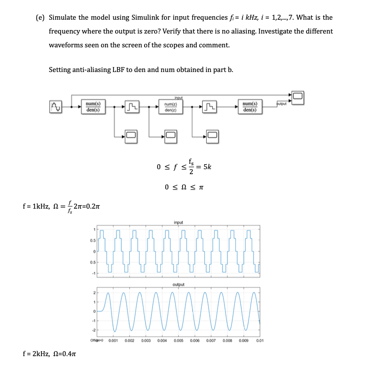
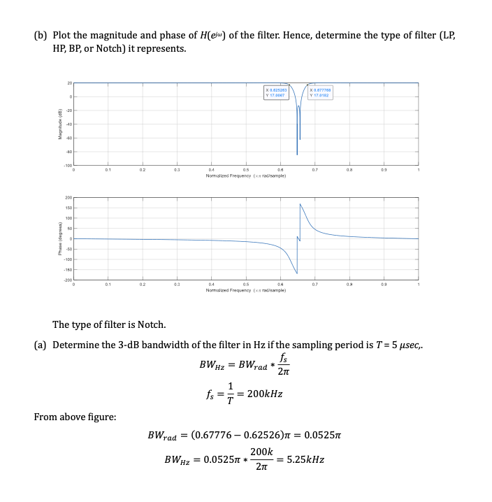

Senior Design
Smart Shoe System — Embedded Sensors, ESP32 & Mobile Dashboard
Designed a wearable sensing system using pressure/force sensors, ESP32 communication, serial data readings, and a Flutter mobile dashboard. Demonstrates sensor integration, embedded reads, mobile visualization, hardware/software integration, and physical prototype iteration.
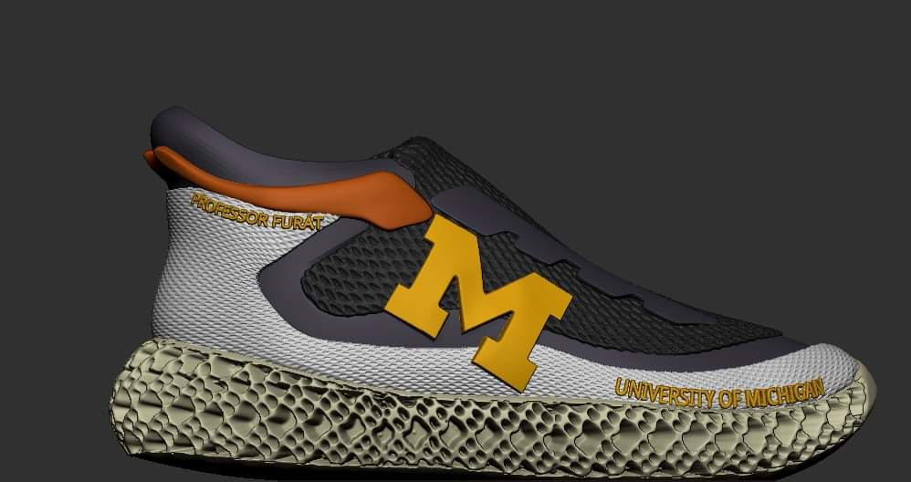

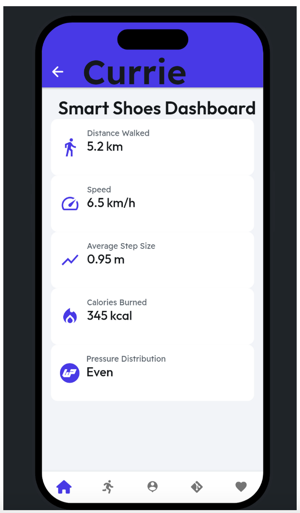

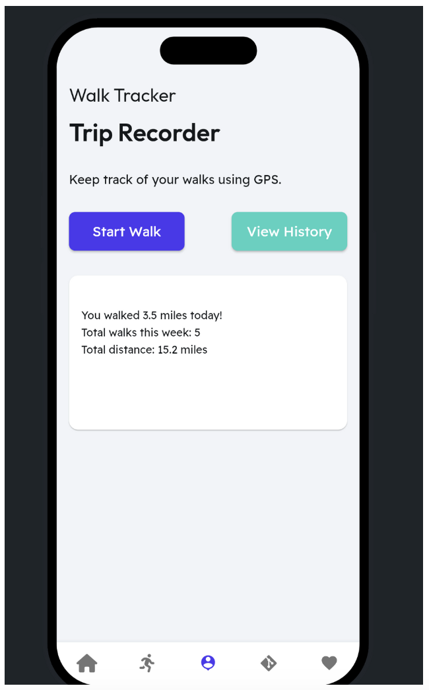
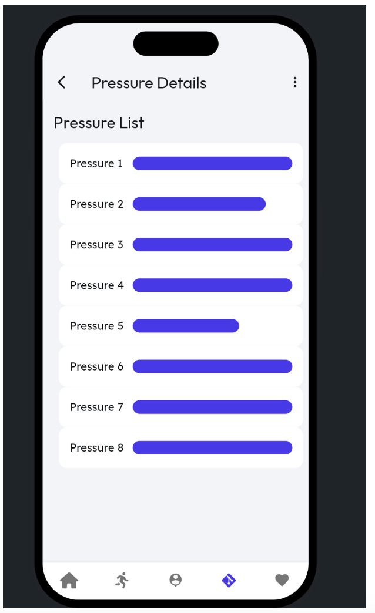


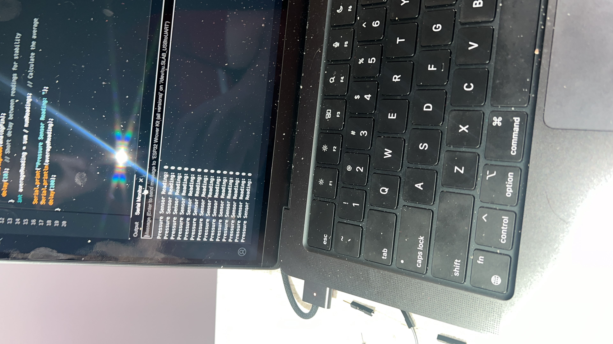

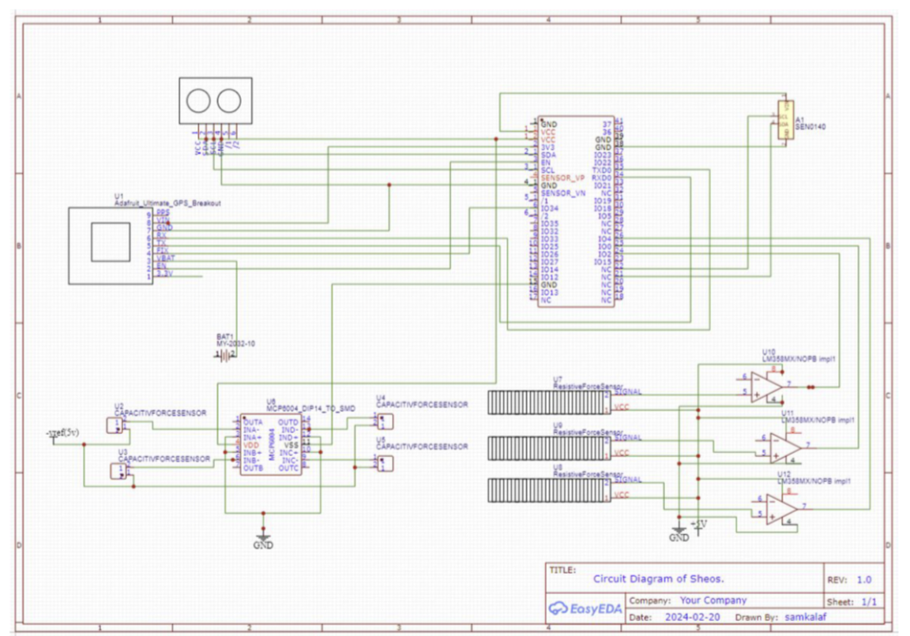


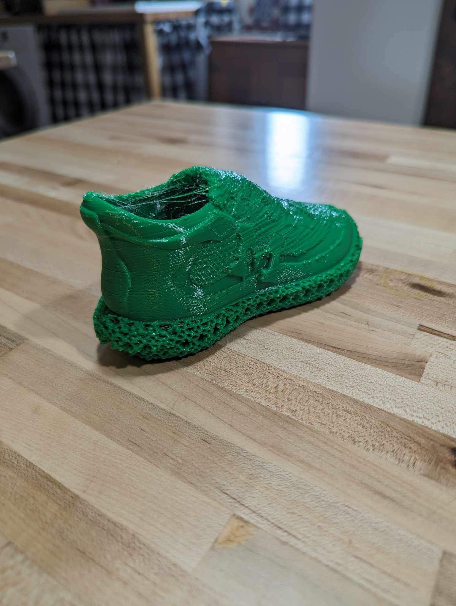
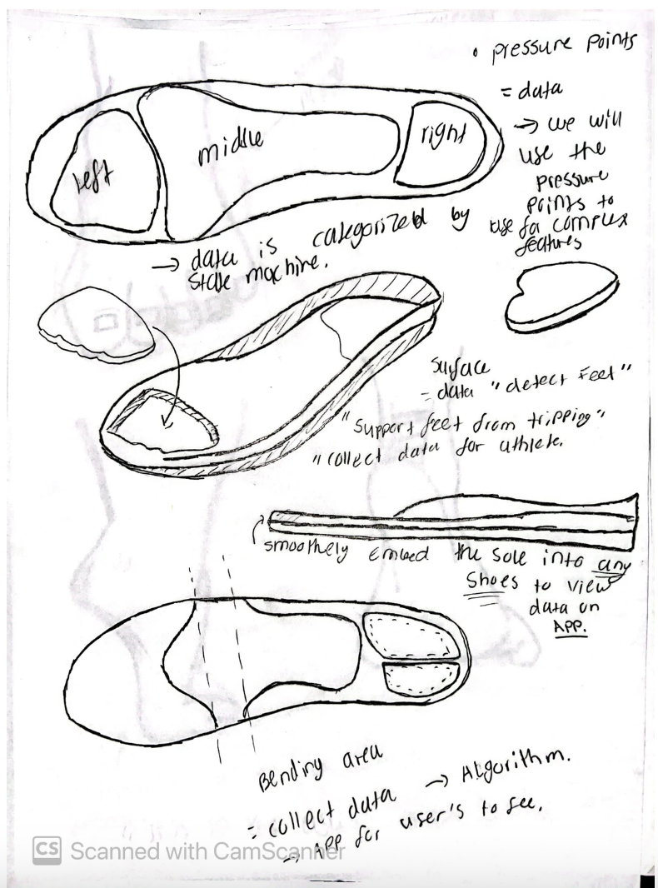

Robot Vision Line Follower & Proportional Control
Developed robot vision software for line following using ROS image acquisition, Canny edge detection, Hough line extraction, and proportional steering control.
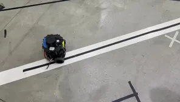
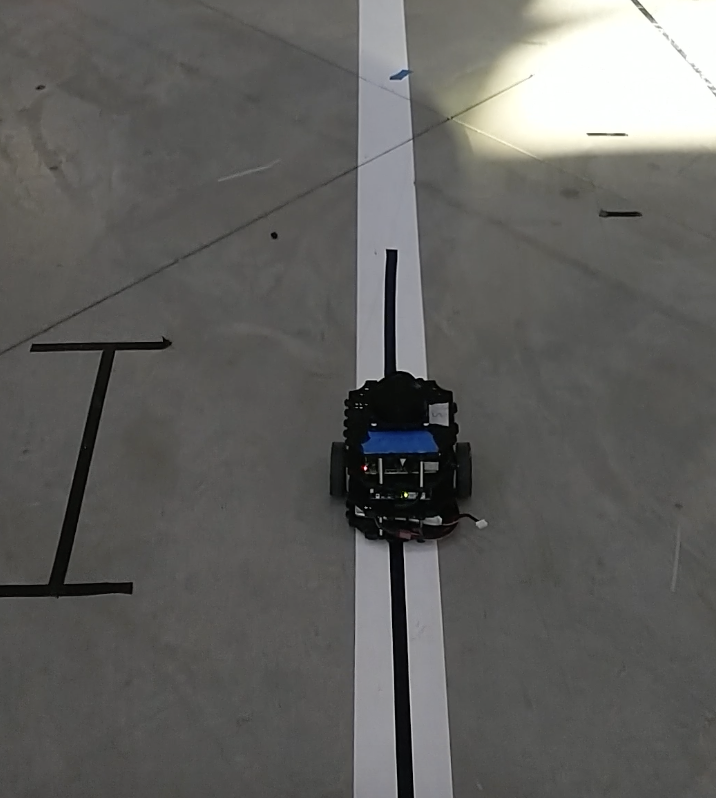
Embedded Development Boards & Microcontroller Platforms
Hands-on embedded systems work across Arduino, Nexys A7 FPGA, DragonBoard, and TM4C123GXL platforms. Used these boards for sensor integration, digital logic, UART/I2C communication, embedded debugging, and hardware/software validation.
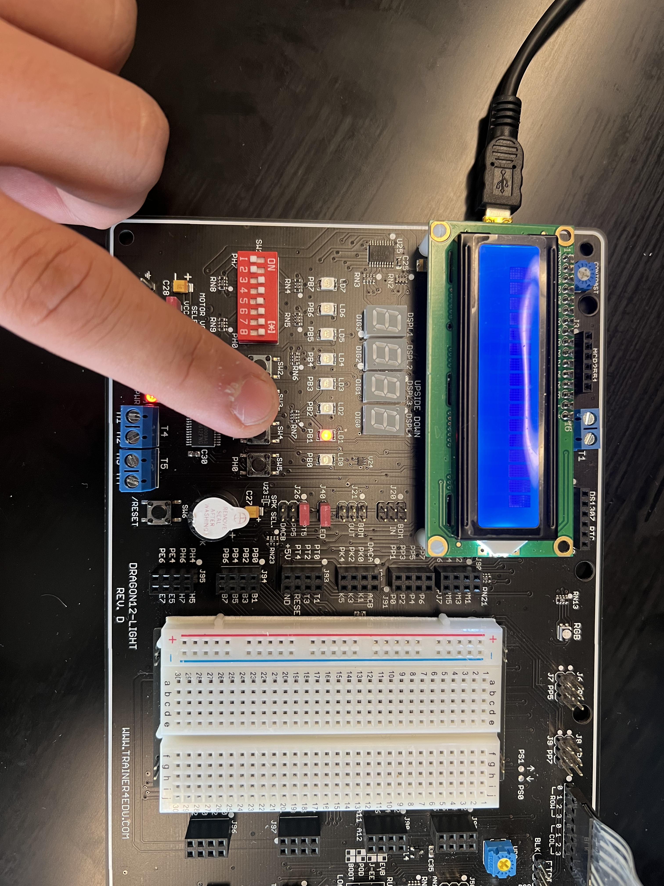


UART, I2C, ADC & Embedded Debugging
Configured UART communication, ADC conversion, I2C accelerometer reads, and LED control logic. Used serial output and debugging tools to verify embedded behavior.
Alcohol Detection System — FPGA, VHDL & Decision Logic
Developed VHDL logic for sensor-driven decision logic with simulation waveforms for intoxication, distance, speed, and display outputs.

Image Transmission Network
Built a socket-based image transmission system using client/server networking concepts and file-transfer workflows.
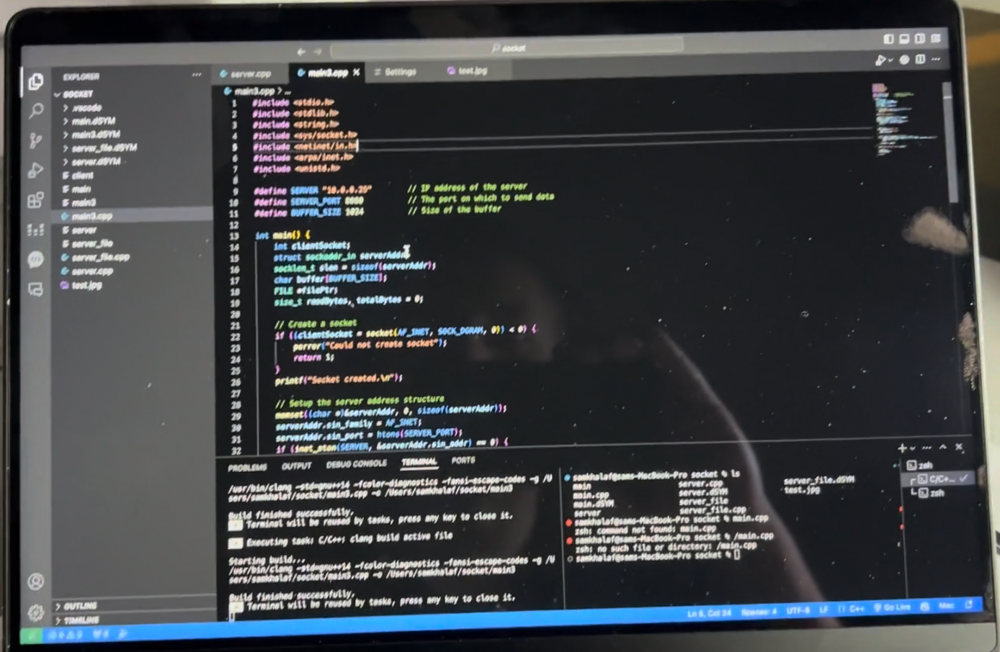
Operational Amplifier Circuit Analysis
Simulated and tested op-amp configurations in LTspice and lab measurements. Compared gain, clipping, waveform response, and measured hardware results.
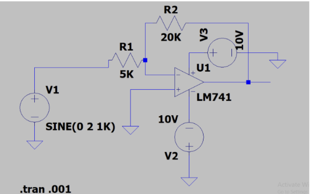
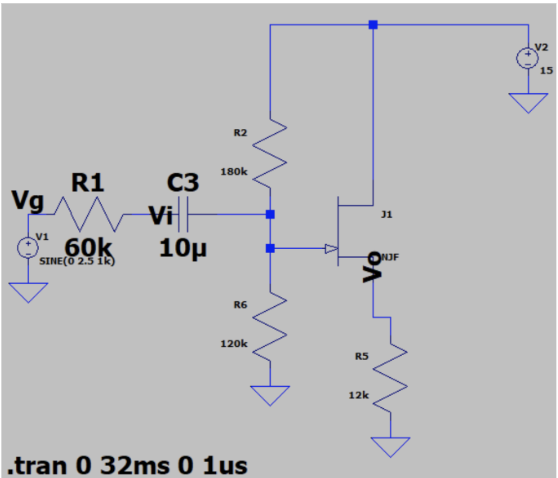
MOSFET Amplifier Simulation & Validation
Investigated common-source and source-follower MOSFET amplifier behavior through LTspice simulation and lab comparison.
Credentials
Training & Certifications
Supporting training in automation, robotics, software development, data analysis, and AI.
Nachi robot training: AX PLC, I/O, FD operation and programming
LinkedIn Learning coursework including PLC Developer and technical skills
Microsoft career essentials in software development and data analysis
IBM Python, AI, generative AI, and data science coursework
Next Step
Contact
For controls engineering, automation, validation, test systems, embedded systems, and automotive systems opportunities.
 Email
samkalaf@umich.edu
Email
samkalaf@umich.edu
 Phone
(586) 224-3245
Phone
(586) 224-3245
 LinkedIn
View Profile
LinkedIn
View Profile
 GitHub
View Projects
GitHub
View Projects
 Website
samkhalaf.org
Website
samkhalaf.org